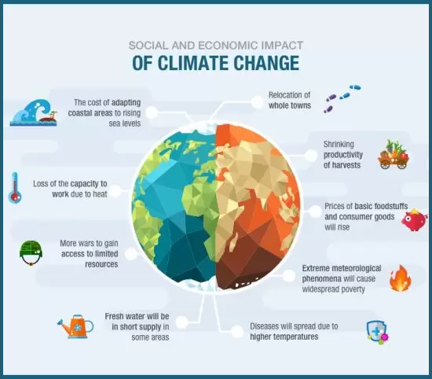

Effects of Global Warming
"We won't have a society if we destroy the environment"
The effects of human-caused global warming are happening now, are irreversible for people alive today, and will worsen as long as humans add greenhouse gases to the atmosphere. Global climate change is not a future problem. Climate scientists have concluded that we must limit global warming to 1.5 degrees Celsius by 2040 Changes to Earth climate driven by increased human emissions of heat-trapping greenhouse gases are already having widespread effects on the environment: glaciers and ice sheets are shrinking, river and lake ice is breaking up earlier, plant and animal geographic ranges are shifting, and plants and trees are blooming sooner. Effects that scientists had long predicted would result from global climate change are now occurring, such as sea ice loss, accelerated sea level rise, and longer, more intense heat waves, etc. For-example, scientists concludedthat a lengthy drought in California- the state's worst water shortage in past 1,200 years has been intensified to 15-20 perecnt by global warming. Global warming, a long-term increase in the average temperature of the Earth's climate, has become one of the most pressing environmental issues of our time. While the causes and potential solutions to global warming are widely discussed, it is crucial to examine the immediate and long-term effects of this phenomenon on our planet. This paper will provide a comprehensive overview of the devastating effects of global warming, ranging from rising temperatures and extreme weather events to biodiversity loss and sea level rise.
Different Effects of Global Warming :
Rising Temperatures
One of the most evident and immediate effects of global warming is the rise in average temperatures across the globe. Over the past century, the Earth's surface
temperature has increased by approximately 1.2°C (2.2°F). This warming trend is expected to continue and accelerate in the coming decades.
Higher temperatures have
far-reaching consequences for various aspects of our environment and society.
a. Heatwaves: Rising temperatures contribute to more frequent and severe heatwaves. These events can have severe health implications, especially for
vulnerable populations, such as the elderly, young children, and individuals with pre-existing health conditions.
b. Crop Failure: Increased temperatures can harm
agricultural productivity by disrupting growing seasons, reducing crop yields, and altering the distribution
of pests and diseases. This can lead to food scarcity and higher prices.
c. Water Scarcity: Higher temperatures can intensify droughts and reduce water availability, leading to
water scarcity in many regions. This can further
exacerbate food and water security issues

Extreme Weather Events
Global warming is associated with an increase in the frequency and intensity of extreme weather events, including hurricanes, cyclones, droughts, and floods.
a. Hurricanes and Cyclones: Warmer ocean waters fuel more powerful hurricanes and cyclones, resulting in greater damage when these storms make landfall.
Coastal communities are particularly at risk. United states saw an unprecedented
22 weather and climate disasters that caused at least a billion
dollars worth damage in 2020 but 2017 was the costliest on record and among deadliest as well
b. Droughts: Higher temperatures can lead to more prolonged and severe droughts. This can cause water shortages, damage to ecosystems, and agricultural
losses.
c. Flooding: Increased global temperatures contribute to the melting of polar ice and glaciers, raising sea levels and making coastal regions more
susceptible to flooding during storms. This endangers both human communities and ecosystems.

Melting Polar Ice and Glaciers
Global warming has accelerated the melting of polar ice caps and glaciers, particularly in the Arctic and Antarctica. This phenomenon has profound consequences for
global sea levels and ecosystems.
a. Sea Level Rise: The melting of ice caps and glaciers, combined with the thermal expansion of seawater, is causing
sea levels to rise at an alarming rate.
Rising sea levels threaten coastal communities and can lead to inundation and erosion.
b. Ecosystem Disruption: Polar ecosystems, including those in the Arctic, are facing unprecedented disruption due to the loss of sea ice. This has severe
consequences for the wildlife that depend on these habitats, such as polar bears and penguins.

Biodiversity Loss
Global warming poses a significant threat to biodiversity by altering habitats, disrupting ecosystems, and exacerbating extinction risks.
a. Habitat Loss: Rising temperatures and changing precipitation patterns can lead to the
loss of critical habitats for various species. For example, coral
reefs are particularly vulnerable to bleaching due to increased ocean temperatures.
b. Altered Migration Patterns: As temperatures change, some species may need to alter their migration patterns to find suitable habitats. This can disrupt
ecosystems and lead to population declines.
c. Increased Extinction Risk: Many species, especially those with narrow ranges or specialized ecological niches, face an increased
risk of extinction due to
the rapid pace of climate change.
Ocean Acidification
Global warming is not only warming the planet but also impacting the
chemistry of our oceans. Increased atmospheric carbon dioxide is being absorbed by the world's
oceans, leading to ocean acidification.
a. Coral Reefs: Ocean acidification is particularly detrimental to coral reefs, as it weakens the calcium carbonate structures that corals rely on for their
survival. This threatens the health and stability of these vital ecosystems.
b. Marine Life: Acidic waters can affect the physiology of marine organisms, including mollusks and some plankton species. This can have cascading effects on
the entire marine food web.